Você pode ser High Level.
Hoje. No meio do caminho. Com o que você tem agora.
High Level é o nível que você escolhe jogar: no negócio, em si mesmo, na rotina.
O avançado do mercado é o seu básico.
Estratégia primeiro. Rotina todo dia. Prática sempre.
A cada vitória e a cada queda, o nível aparece no que você faz.
Vitória exige sustentação.
Eu sou High Level. Agora é a sua vez de decidir.
High Level é o movimento de quem decidiu jogar um nível acima: no negócio, em si mesmo e na rotina.
Fazer quem faz o digital jogar um nível acima: no negócio, em si mesmo e na rotina.
Formar a próxima geração de estrategistas de marketing digital do Brasil.
High Level é um nível que se sustenta. Ele nasce de decisões pequenas, tomadas hoje: estratégia no negócio, performance em si mesmo, rotina na vida. Quem sustenta, sobe.
A autoridade se constrói limpa: participei quando participei, criei só quando criei.
Menos fala, mais construção; menos prova, mais resultado.
Eu não quero apenas vencer. Eu quero servir.
Só entra onde o lugar está claro, com acordo real.
Decisão pesa mais que circunstância.
Construir com Deus, sem falar em nome de Deus.
Decisão pesa mais que circunstância; ninguém precisa ficar preso ao básico e à teoria.
Estratégia primeiro; rotina de alta performance; IA como uma ferramenta entre muitas; mostrar em vez de afirmar.
Cursos e mentorias de marketing digital e de alta performance na High Level Academy; conteúdo de marketing digital, alta performance e vlog de rotina.
Autoridade pela régua e pela ordem. Nada de intimidação, superioridade ou ostentação.
| Governante maduro | Criador | |
|---|---|---|
| Motivação | Ordem que faz crescer | Construir algo de valor que dura |
| Medo | Desordem, o mesmo medo que o público carrega | O mediano: uma boa ideia executada pela metade |
| Promessa | A régua que organiza o seu jogo | As ferramentas para você construir o seu |
| Tom | Firme | Inventivo |
| Aparece em | A régua, o jeito de pensar do estrategista, a liderança do movimento | Ferramentas, sistemas, IA, lockups e visual |
| Referência | A régua, não o luxo | Apple, por ser diferente |
Para profissionais de marketing digital, empreendedores e novos empreendedores digitais de 18 a 35 anos que querem jogar acima do básico, o High Level é o movimento que forma estrategistas de marketing digital com alta performance pessoal, guiado por Marcos Bautitz, o estrategista que mostra a própria rotina.
Tornar-se estrategista de marketing digital. O tronco. A IA é uma das ferramentas, entre muitas.
Inteligência emocional profunda (com os hacks de vida dentro), desafios, exercício físico, jeito de um estrategista pensar.
Vlog de rotinas.
| Peça | Como funciona |
|---|---|
| A régua | O avançado do mercado é o básico de um High Level. A pessoa quer saber o que é o avançado de quem está dentro. |
| O convite | Você pode ser High Level. Um nível que se alcança põe a pessoa em movimento. |
| O guia | O Marcos, estrategista, mostra a própria rotina no vlog. |
| O sinal | Anel, pulseira, wallpaper e #eusouhighlevel. Quem vê pergunta o que é. |
| A porta | High Level Academy: marketing digital (Manifest Mentoring, Digital Lab Week, As 22 Leis Irrefutáveis do Marketing) e alta performance (produto a nascer). |
| Elemento | Conteúdo |
|---|---|
| Palavras | Marcos Bautitz: estrategista. High Level: nível. |
| Diferencial | Um estrategista que mostra a própria rotina real, sem ostentação, e junta estratégia de negócio digital com alta performance vivida. |
| O que a marca combate | Cultura da desculpa, mentalidade de vítima, preguiça disfarçada de autoestima, ostentação, jargão de guru, promessa de revolução. |
| Público | De 18 a 35 anos: profissionais de marketing digital; empreendedores que querem escalar para o digital; novos empreendedores digitais. O que une é a régua. |
| Promessa | Tornar-se estrategista de marketing digital, com alta performance pessoal. |
| O nome | High Level quer dizer nível alto. O nome já é a promessa. |
| Arquitetura | Marcos Bautitz, High Level, High Level Academy e os produtos com marcador de cor. |
| Produtos | Marketing digital: Manifest Mentoring, Digital Lab Week e o livro digital As 22 Leis Irrefutáveis do Marketing (releitura autoral do clássico de Al Ries e Jack Trout; a base é sempre declarada). Alta performance: produto a nascer. |
Você pode ser High Level.
O avançado do mercado é o básico de um High Level.
Estratégia não é um método.
O lobo solitário encontrou sua alcateia.
Eu sou High Level. #eusouhighlevel
Estratégia no negócio. Performance em você. Rotina na vida.
Um nível acima, todo dia.
| Elemento | Definição |
|---|---|
| Voz | Direta, provocadora, próxima |
| Tom por contexto | Aula e mentoria: didático, por cena e analogia. Vlog: leve, humor seco, bastidor. Performance e emoção: sereno e firme. Fé e origem: sereno e grato |
| Regra de ouro | Toda provocação termina num passo que a pessoa consegue dar |
| Regras fixas | Fala com uma pessoa; frases curtas; frase pública na afirmativa; verbos físicos; fecha com ação; títulos em caixa alta; sem travessão, sem emoticon |
| Contexto | Assim sim | Assim não | Por quê |
|---|---|---|---|
| Título | O AVANÇADO DO MERCADO É O SEU BÁSICO. | O MÉTODO SECRETO QUE VAI REVOLUCIONAR O SEU NEGÓCIO | Régua em vez de jargão de guru |
| Aula | Pensa no teu funil como um cano. Tráfego que entra num cano furado vaza. Tapa o furo, depois abre a torneira. | Neste módulo vamos abordar os conceitos fundamentais de otimização de funil. | Cena, analogia e verbo físico |
| Chamada | Você pode ser High Level. Entra na Academy hoje. | Últimas vagas!!! Não fique de fora! | Convite firme em vez de alarde |
| Vlog | Treino feito. Agora é o planejamento da semana. Vem comigo. | Mais um dia de sucesso na vida de milionário. | Rotina real em vez de ostentação |
| Erro | Errei o dado do vídeo de ontem. Está corrigido na descrição. | Apagar o vídeo e seguir como se nada tivesse acontecido. | Verdade acima de imagem |
| Fé | Devocional e oração fazem parte da minha rotina. | Deus quer que você entre nesse curso. | Fé como fundamento, nunca argumento de venda |
Fraco (iniciante ou alguém muito bom, em duplo sentido). Joça (objeto, em tom irônico).
Onde está: Consome muito, aplica pouco; comprou mais do mesmo; presa à teoria.
O que a marca faz: Conteúdo de marketing digital e vlog: mostra que existe outro nível.
Onde está: Descobre que o avançado do mercado é o básico de um High Level e que estratégia vem antes do método.
O que a marca faz: Provoca, ensina de graça o caminho das pedras e faz o convite: você pode ser High Level.
Onde está: Entra na High Level Academy; aprende a pensar como estrategista; organiza performance e rotina.
O que a marca faz: Cursos e mentorias das duas linhas; régua alta, com passo possível.
Onde está: Estrategista de marketing digital, com uma rotina que sustenta o crescimento; diz eu sou High Level e ajuda quem vem atrás.
O que a marca faz: Reconhece e dá o sinal de quem está dentro: anel, pulseira, #eusouhighlevel.
| Versão | Uso |
|---|---|
| Principal: MARCOS em Regular, BAUTITZ em ExtraBold (Poppins) | Uso padrão. O destaque cai no sobrenome, que é o que diferencia |
| Cheia: tudo em Poppins ExtraBold | Tamanhos pequenos e fundos com textura, onde precisa de mais peso |
| Condensada: Oswald | Títulos de vídeo, thumbnails e aberturas, junto da letra dos títulos |
| Assinatura: Marcos Bautitz com o anel e HIGHLEVEL embaixo | Quando a peça é do movimento e o Marcos aparece como guia: site, capa de aula, slides |
| Elemento | Regra |
|---|---|
| Símbolo | Anel vermelho #df0000. Versões: chapada, com brilho sobre escuro, a lápis sobre papel |
| Logotipo | HIGHLEVEL em Poppins ExtraBold, caixa alta. Preto sobre claro; cinza claro sobre escuro; tonal em relevo |
| Versões oficiais | HIGHLEVEL; #HIGHLEVEL; HIGHLEVELACADEMY; #HIGHLEVELACADEMY. Em preto e em cinza claro |
| Lockups de produto | Manifest Mentoring, Digital Lab Week e As 22 Leis (22 LEIS condensado vazado, IRREFUTÁVEIS DO MARKETING pequeno em violeta), com o marcador de família |
| Marcador de família | Cinza claro no topo, cor do produto no meio, vermelho na base. Produto dentro da Academy leva também o azul acinzentado da Academy logo abaixo do cinza, como no arquivo original de 2021 |
| Área de respiro | Espaço livre em volta do logotipo igual à altura do anel |
| Tamanho mínimo | 24 px de altura na tela, 8 mm impresso; abaixo disso, só o anel |
#df0000RGB 223, 0, 0Luz e destaque. Nunca fundo de página inteira
#1d1d1dRGB 29, 29, 29Base do registro escuro
#e5e5e5RGB 229, 229, 229Texto sobre escuro; topo do marcador
#ffffffRGB 255, 255, 255Base do registro claro
#bac5dfRGB 186, 197, 223Marcador da High Level Academy
#ffba00RGB 255, 186, 0Marcador e MENTORING
#2679ffRGB 38, 121, 255Marcador
#a66bffRGB 166, 107, 255Cor única do livro: número das leis, marcador, linha da capa e subtítulo do logo. Nenhum outro produto usa violeta
Valores extraídos do arquivo original e do Brandkit 2021. Para impressão, a gráfica converte para CMYK a partir do HEX e manda prova de cor antes de rodar.
| Combinação | Contraste | Regra |
|---|---|---|
| Cinza claro sobre preto | 13,4 | Livre, inclusive texto corrido |
| Branco sobre vermelho | 5,1 | Livre |
| Vermelho sobre branco | 5,1 | Livre |
| Vermelho sobre preto | 3,3 | Só título grande (a partir de 24 px) e grafismo |
| Vermelho sobre cinza claro | 4,0 | Só título grande |
| Amarelo Manifest sobre preto | 9,9 | Livre |
| Violeta do livro sobre preto | 5,0 | Livre |
| Violeta do livro sobre papel claro | 3,2 | Só elemento grande |
Escala: título principal 48 a 64 px; subtítulo 28 a 32 px; texto 16 a 18 px; legenda 12 a 14 px. Títulos em caixa alta.
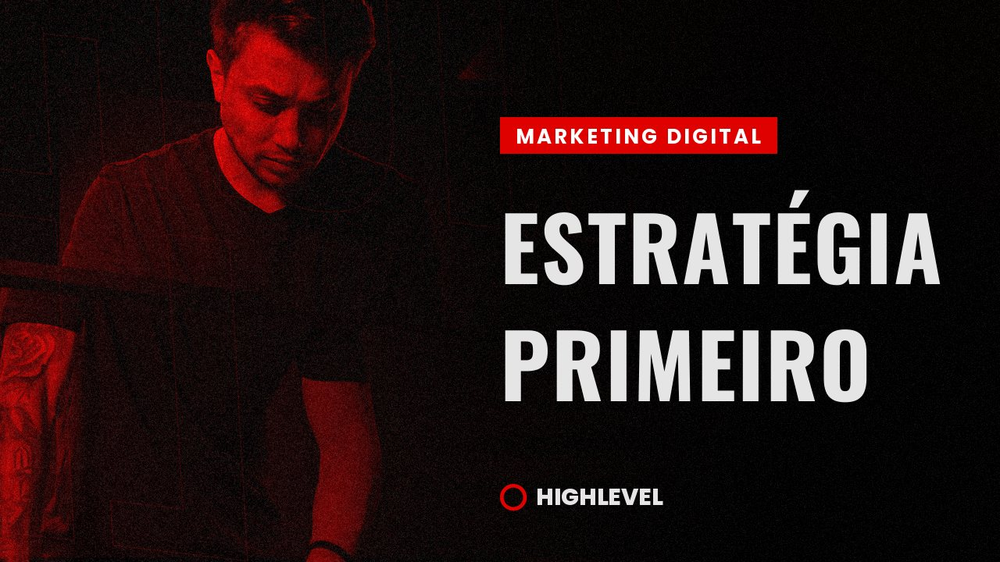
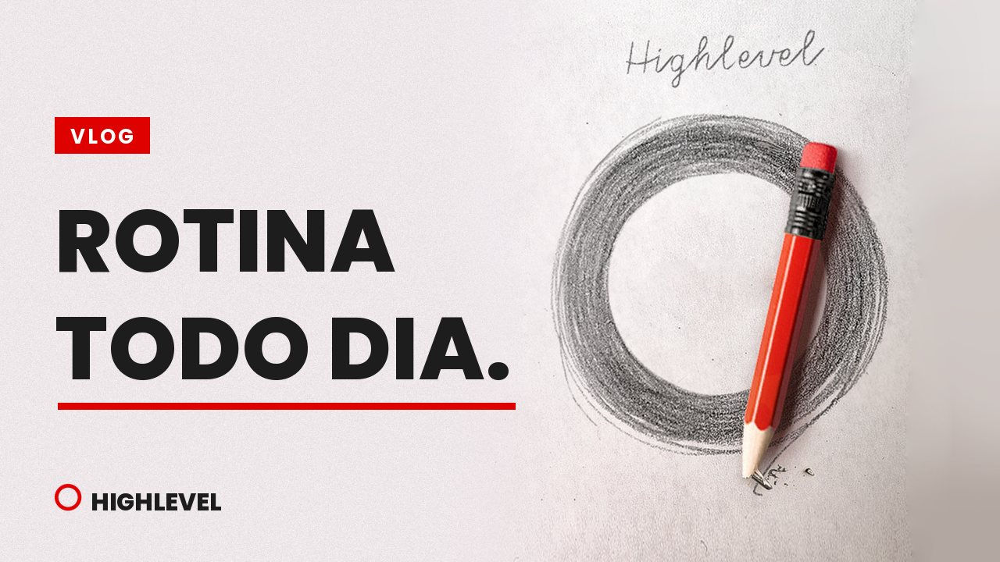
Até o ensaio novo, valem as fotos de 2021. Lista do ensaio de 2026:
Tratamentos que ficam: pb com grão pesado; duotone vermelho e preto; separação vermelho e ciano; azul frio; luz vermelha lateral.
Logotipo vazado gigante cortado pelas bordas; palavra repetida; faixa de luz vermelha; lobo em fumaça ao fundo; papel rasgado com texto datilografado; pequenos x brancos como acento. Área livre à esquerda ou à direita da foto para o título.
O logotipo vazado entra por uma faixa que varre a tela. Aberturas de vídeo.
Pulso com brilho vermelho. Indicador de ao vivo.
Número que sobe até o valor. Só com dado que tem prova.
Card sobe 2 px e ganha borda vermelha. Passe o mouse aqui.
Conteúdo entra com desfoque e deslize curto ao rolar a página, como nesta página.
:root {
--client-vermelho: #df0000;
--client-preto: #1d1d1d;
--client-cinza-claro: #e5e5e5;
--client-branco: #ffffff;
--client-academy: #bac5df;
--client-manifest: #ffba00;
--client-digital-lab-week: #2679ff;
--client-livro-22-leis: #a66bff;
--client-font-detalhe: "Big Shoulders", sans-serif;
--client-font-titulo: "Poppins", sans-serif;
--client-font-condensada: "Oswald", sans-serif;
--client-font-texto: "Open Sans", sans-serif;
--client-espaco-base: 8px;
}Peças de 2026 feitas com as fotos de 2021, no visual novo.
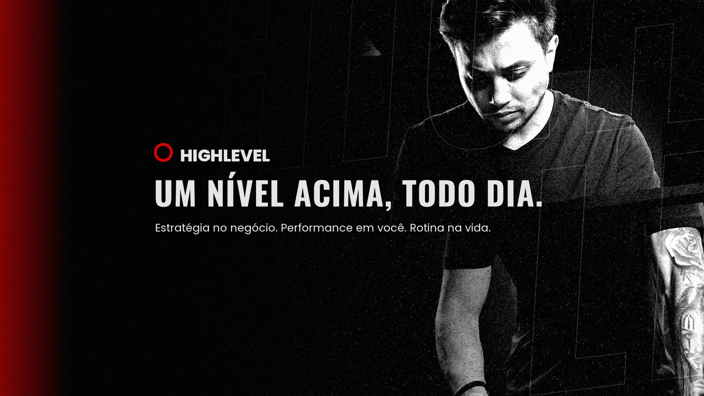
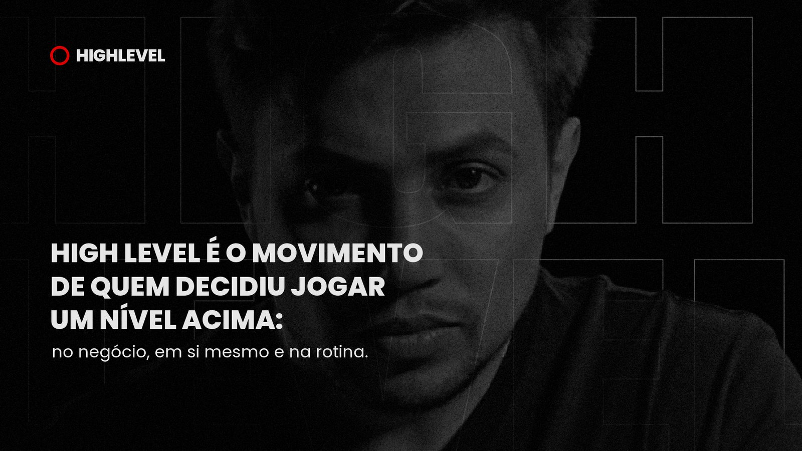
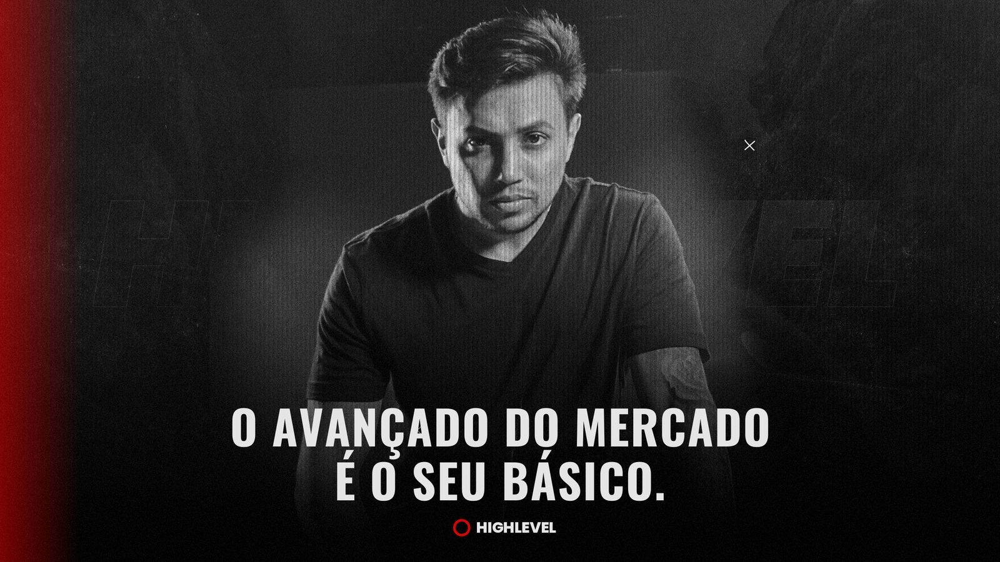
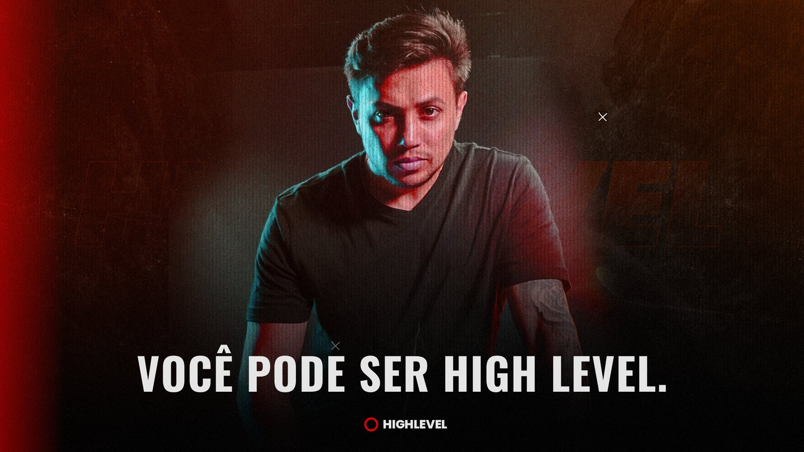
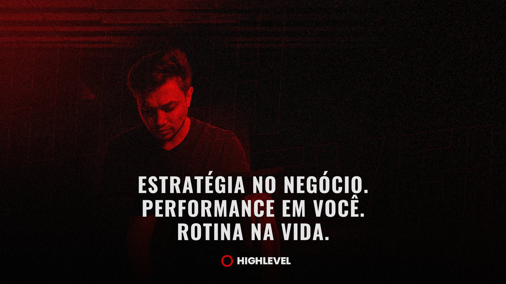
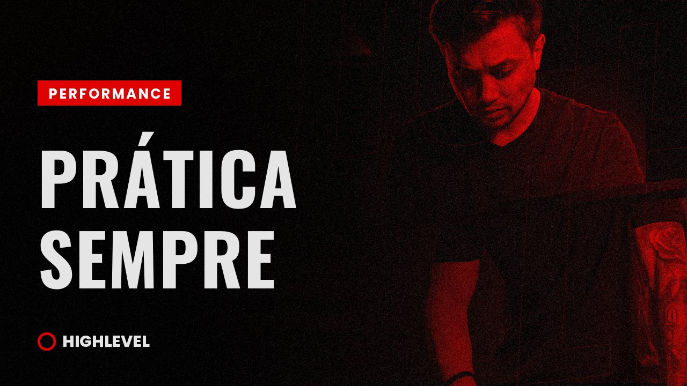
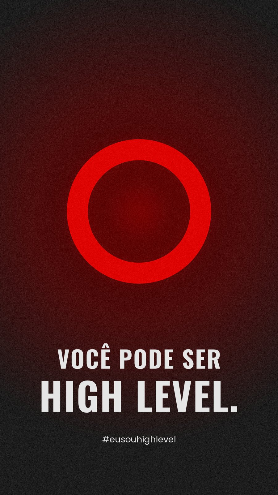
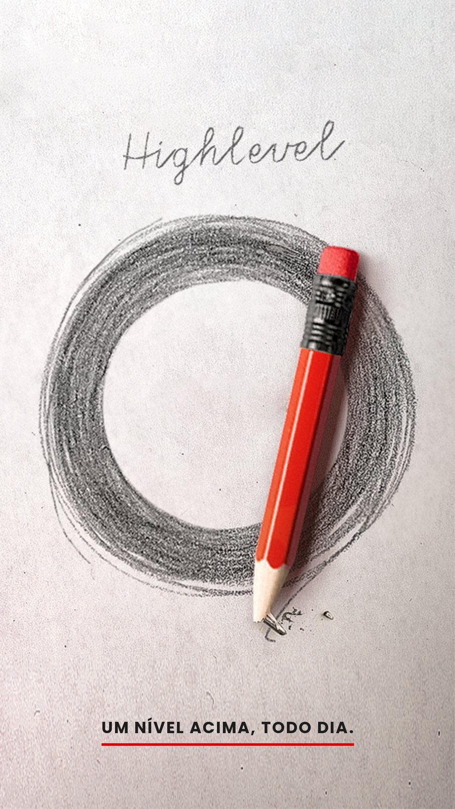
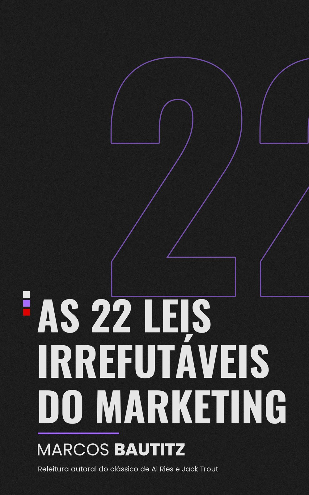
| Peça | Formato | Registro e regra |
|---|---|---|
| Banner do YouTube | 2560 x 1440 | Escuro; retrato à direita, logotipo vazado ao fundo |
| Thumbnails por campo | 1280 x 720 | Estratégia e Performance no escuro; Rotina no claro. Título em Oswald, no máximo 4 palavras |
| Abertura de vídeo | 16:9 | Revelação por máscara com o anel |
| Lower thirds | 16:9 | Faixa vermelha fina, nome em Poppins |
| Capa de playlist | 1280 x 720 | Uma por campo do movimento |
| Instagram @marcosbautitz | 1080 x 1080, 1080 x 1350, 1080 x 1920 | Carrossel no escuro para Estratégia; stories de rotina no claro; destaques com o anel |
| Site marcosbautitz.com.br | Web | Frase-mãe no topo; os três campos; a porta para a Academy |
| High Level Academy | Área de membros | Marcador de família em cada produto |
| Slides de aula e mentoria | 16:9 | Fundo noite, títulos em caixa alta, texto em Open Sans |
| Wallpapers do movimento | 1080 x 1920 | Anel com brilho; versão a lápis |
| Pulseira | 200 x 10 mm | Preta; anel vermelho; HIGHLEVEL em baixo-relevo tonal |
| Moletom | Peça | Preto; HIGHLEVEL em relevo tonal no peito; friso vermelho na manga |
| Capa do livro As 22 Leis | 1600 x 2560 | Preto chapado, sem gradiente; 22 gigante em violeta; título em Oswald; marcador de família; só o nome MARCOS BAUTITZ; base declarada: releitura autoral de Al Ries e Jack Trout |
| Faça | Evite |
|---|---|
| Vermelho como luz e detalhe | Vermelho como fundo de página inteira |
| Retrato como protagonista, logotipo como textura | Logotipo competindo com o rosto |
| Rotina real no registro claro | Objeto de luxo, dinheiro ou marca de terceiros em destaque |
| Título em caixa alta, curto | Frase na negativa em peça pública |
| Anel sozinho em tamanho pequeno | Logotipo menor que o tamanho mínimo |
Um ciclo: decisão, prática e rotina, todo dia, sem começo nem fim. É o nível que se sustenta. Fechado como o movimento.
O espaço que cada pessoa preenche com o próprio nível. O movimento dá a régua; quem entra ocupa o centro.
A luz da decisão. Acende no escuro e aponta o caminho.
Foco e construção em silêncio. Olhos fixos no objetivo.
Clareza. A cor de quem lê o jogo com nitidez.
A decisão: valores extremos, como quem escolhe jogar um nível acima.
A vida real escrita todo dia. A lápis porque rotina se ajusta e erro se corrige à vista.
O estrategista que veio dos bastidores sozinho e encontrou a tribo. O lobo caça com estratégia, em grupo.
O nível como ambiente: quem aparece na peça está dentro do High Level.
A marca é a pessoa. O Marcos mostra, o público vê.
O alvo marcado no mapa: onde a estratégia mira.
A trilha: clareza no topo, o caminho escolhido no meio, o nível na base, chão comum de todos.
A firmeza do Governante: letra que decide.
Força e urgência do título.
Clareza para ensinar.
O detalhe do Criador. Nasceu de placa de rua: a lei gravada, reta e fina.
O anel vestido. Sinal de quem decidiu; o compromisso diário.
A marca é a pessoa: o nome vem na frente e o movimento assina embaixo. O peso no sobrenome marca quem é.
Declaração em primeira pessoa. Quem usa afirma o próprio nível.
O saber que vem antes da decisão. O vermelho decide; o violeta é a estratégia por trás.
Marcos Bautitz nasceu em Curitiba, em 1991, filho de uma mãe adolescente que enfrentou uma gravidez de risco sozinha, sem rede de apoio e sem dinheiro. Ele nasceu prematuro e passou os primeiros 40 dias de vida numa UTI neonatal, com um prognóstico que apontava para dependência permanente de aparelhos.
A mãe dele, com 16 anos, não aceitou o prognóstico. Com fé e com uma coragem que os médicos depois chamariam de ousadia, tomou a decisão de acreditar que o filho respiraria sozinho. No dia seguinte, ele estava fora da incubadora. Uma pessoa próxima da família disse a ela, na época, que aquele menino tinha nascido para brilhar e trazer luz para muitas pessoas.
O que essa história fixa, na leitura do próprio Marcos: a vida dele foi mantida por decisão, contra a probabilidade, por alguém muito jovem que escolheu não desistir. É de onde vem a convicção de que decisão pesa mais que circunstância.
Como a história sustenta a marca (leitura do MARTY): a decisão da mãe é a origem do valor Decisão acima da circunstância, da mensagem central (um nível que se sustenta nasce de decisões pequenas, tomadas hoje) e do anel, o ciclo de decisão que se repete todo dia.
O que ficou: Estratégia antes de método; a Lei da Categoria vivida na prática
O que ficou: O que a gente consegue deixar para os nossos filhos é a vida um pouco mais leve.
O que ficou: Valor Palavra cumprida: só entrar onde o lugar está claro, com acordo real e documentado
O que ficou: Fé como fundamento, nunca como argumento de venda
Defende autoridade limpa: participei quando participei, criei só quando criei. Rejeita autoridade construída com exagero e narrativa inflada, dinheiro usado para comprar aprovação e pertencimento, e venda por alarde e promessa de revolução.
Aprovadas por ele para uso público em 25/09/2026. Para conteúdo, discurso, abertura e fechamento de aula.
Em novembro de 2020, quem acompanhava o Marcos gravou 30 depoimentos #eusouhighlevel. As frases abaixo são literais, sem nomes. Elas mostram como o público enxerga o Marcos e o High Level quando ninguém pede.
A palavra que o público repete: nível acima, outro patamar, subir de nível, aumentar o nosso nível. O público chegou sozinho ao nome do movimento.
“percebi que você joga no nível acima”
“a gente vê que o conteúdo dele é outro patamar”
Confirma na marca: Essência Nível acima e o próprio nome do movimento
“não é o passo a passo, não é um método que vai fazer diferença, é a estratégia [...] é você conhecer o jogo, as regras do jogo”
Confirma na marca: Estratégia não é um método. Campo Estratégia
“o seu conteúdo mostra que o marketing digital não é básico”
“tô de saco cheio de comprar o básico [...] quero coisa avançada”
Confirma na marca: O avançado do mercado é o básico de um High Level
“você compartilhou ferramentas [...] deu o caminho das pedras”
“você tá compartilhando gratuitamente, e é só o começo”
Confirma na marca: Atributo Generoso. Contrato: o caminho das pedras, entregue com generosidade
“sempre atuou nos bastidores e tá começando a aparecer agora”
“bem simples, bem quietinho, porque ele era conhecido como um lobo solitário”
Confirma na marca: O lobo solitário encontrou sua alcateia. Valor: construção em silêncio
“você é um cara que fala e faz”
“o cara mostrou pra que veio”
Confirma na marca: O guia que mostra. Valor: verdade acima de imagem
“tem demonstrado uma qualidade no ensino gigantesca”
“muito mais clareza em relação ao funil”
Confirma na marca: Tom de aula: didático, por cena e analogia. A analogia do bolo e das fatias de oferta foi a mais lembrada
“você continua firme [...] Então você é uma pessoa que eu quero seguir”
Confirma na marca: Vitória exige sustentação
“tem mudado a minha mente e a minha forma de pensar”
“serviu para abrir totalmente o meu horizonte”
Confirma na marca: Campo Performance: jeito de um estrategista pensar
“ele veio realmente para levar a gente para outro nível”
“tantos cursos [...] mais do mesmo [...] e o cara mostrou”
Confirma na marca: Jornada, fase Básico. Em peça pública, a marca afirma o próprio caminho e não compara
“o movimento que ele criou, que é high level, [...] que buscam estar num nível mais alto tanto de conhecimento como de prática”
“eu quero jogar o jogo high level”
Confirma na marca: Frase-mãe: jogar um nível acima. Contrato: prática
“que Deus te abençoe”
“fica com Deus”
Confirma na marca: Fé como fundamento, nunca como argumento de venda
Gestores de tráfego, iniciantes em tráfego e em marketing digital, afiliados que querem lançar produto próprio, jovens a partir de 18 anos e pessoas que já tinham comprado vários cursos. De São Paulo, Recife, Primavera do Leste e Lisboa.
| O que o público mostra | O que a marca decidiu |
|---|---|
| Chamam de nível o que ele faz | Nível é a palavra do movimento. O nome High Level já é o que o público diz |
| Ninguém fala de luxo ou dinheiro | NUNCA ostentação é a percepção real, e não só uma regra |
| Contam sozinhos a história dos bastidores | O lobo solitário e a construção em silêncio são um ativo pronto |
| Lembram da estratégia, não do produto | A promessa: tornar-se estrategista de marketing digital |
| Iniciantes e profissionais falam igual | O que une o público é a régua, e não a experiência |
| A fé aparece na boca de quem assiste | Fé como fundamento, dita pelo Marcos só como parte da rotina |
O livro digital do Marcos. Produto da linha de marketing digital, na High Level Academy.
| Item | Conteúdo |
|---|---|
| Produto | Livro digital |
| Autor | Marcos Bautitz |
| Base | Releitura autoral do clássico As 22 Leis Consagradas do Marketing, de Al Ries e Jack Trout. A base aparece sempre, na capa e na folha de rosto |
| Linha | Marketing digital (campo Estratégia) |
| Onde fica | High Level Academy |
| Formato | PDF A5, 45 páginas, diagramado no visual 2026 |
| Cor | Violeta #a66bff, cor única |
| Letras | Oswald nos títulos, Poppins nos destaques, Open Sans no texto, Big Shoulders no detalhe fino (número das leis, rótulos, sumário, rodapé e fecho da contracapa) |
| Capa | Preto chapado, sem gradiente; 22 gigante em violeta; só o nome MARCOS BAUTITZ |
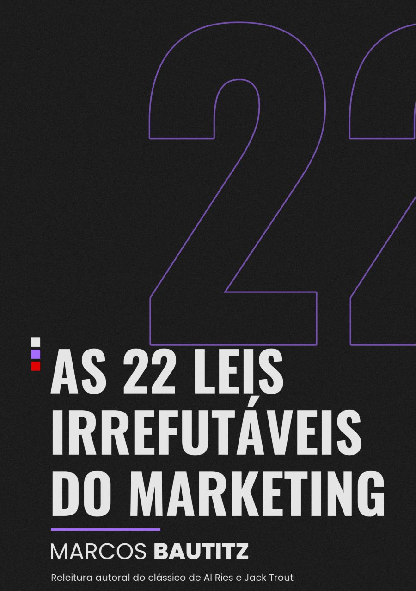
#a66bffRGB 166, 107, 255. Contraste 5,0 sobre preto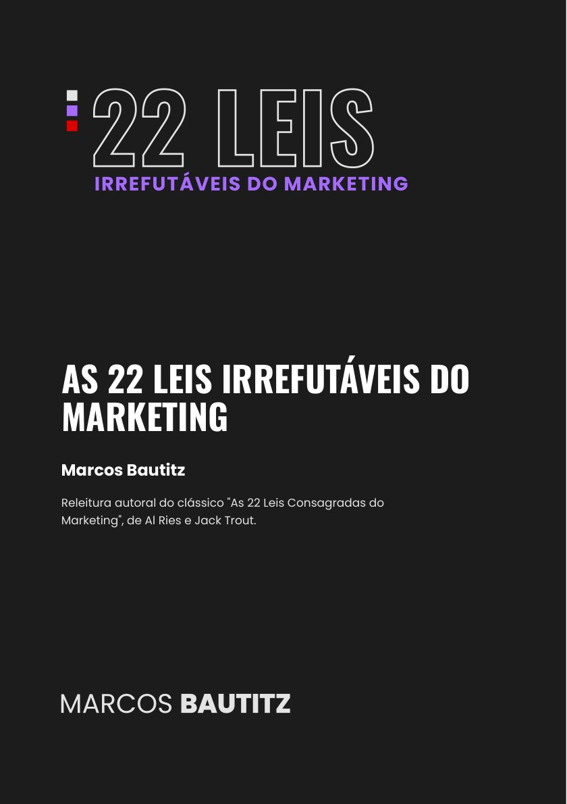
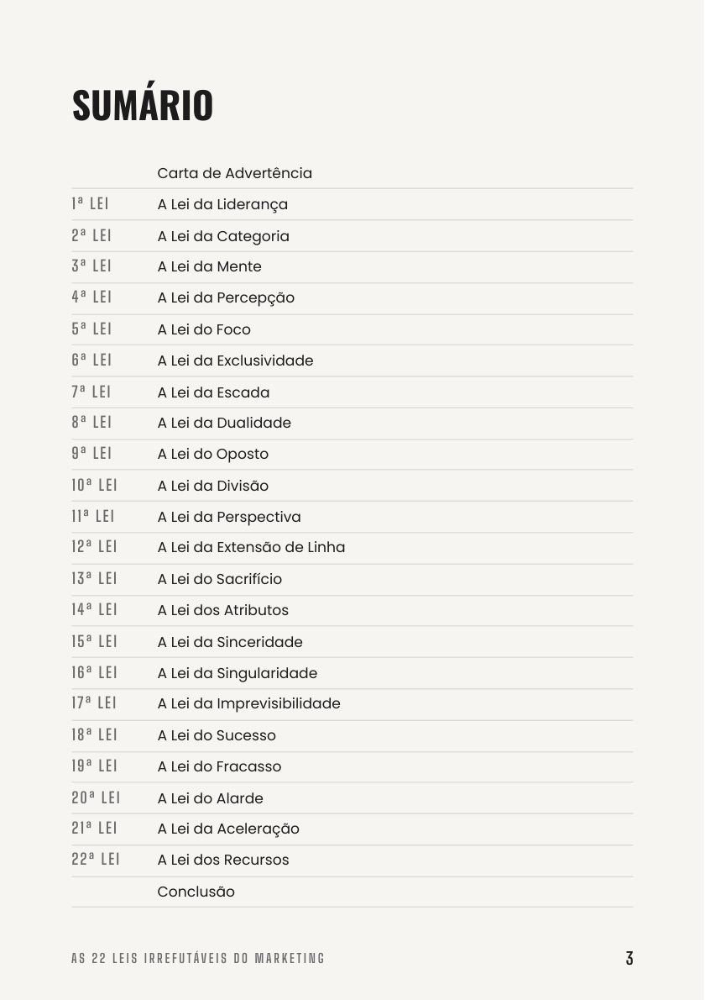
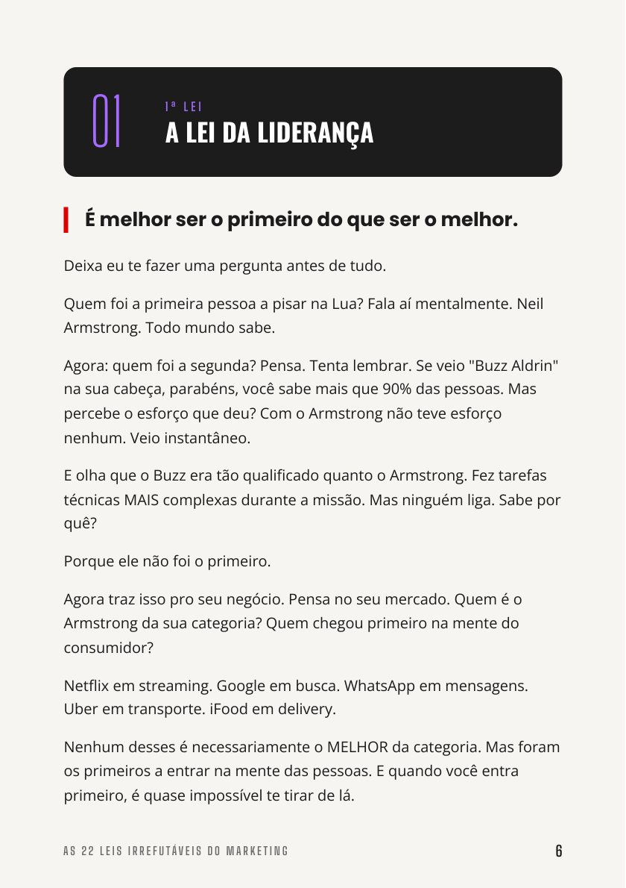
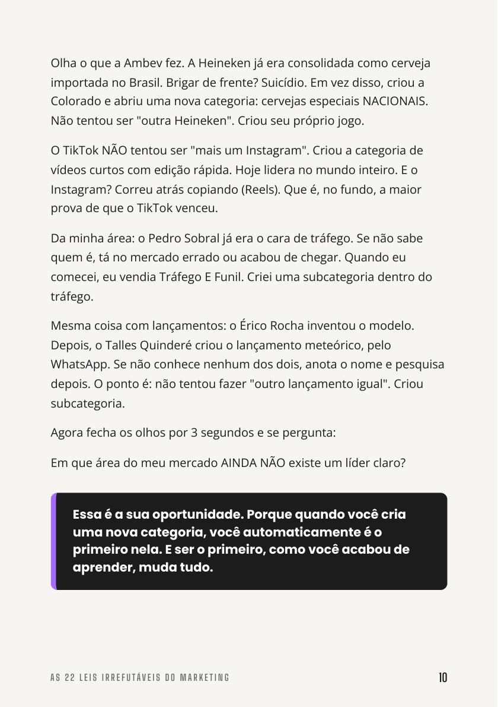
| Lei | Onde aparece no brandbook |
|---|---|
| Lei da Categoria | A categoria de duas camadas: Marcos Bautitz é o estrategista; o High Level é o nível |
| Lei do Foco | Uma palavra por marca: estrategista para o Marcos, nível para o movimento. Marketing digital como tronco |
| Lei da Extensão de Linha | IA como ferramenta do meio, sem produto próprio; marketing digital e negócios digitais viraram uma coisa só |
| Pasta | O que tem |
|---|---|
| Assets/vetor-2026 | Logos Marcos Bautitz (principal, cheia, condensada e assinatura com HIGHLEVEL), anel, logotipos HIGHLEVEL e HIGHLEVELACADEMY e logo do livro As 22 Leis, em vetor (SVG), em preto e em cinza claro |
| Assets/pecas-2026 | Banner do YouTube, topo do site, capas, capa de aula, 3 thumbnails, 2 wallpapers e a capa do livro |
| Assets/fontes-2021 | Logos em PNG, wallpapers, pulseira e backgrounds de 2021 |
| Assets/tipografia | Poppins, Oswald, Open Sans e Big Shoulders, com as licenças livres (OFL) |
| produto-22-leis/livro | O livro diagramado (PDF), a mesma diagramação em HTML, o texto original copiado do segundo cérebro e as prévias das páginas |